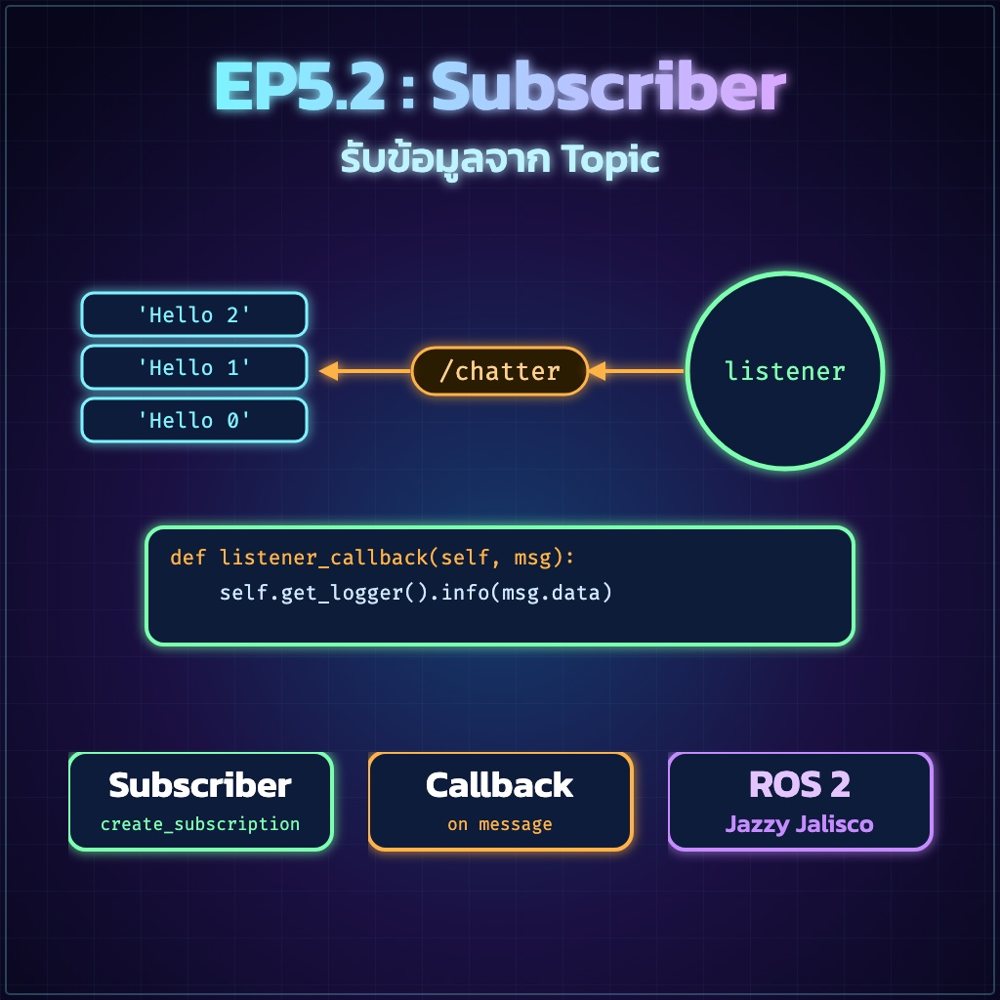
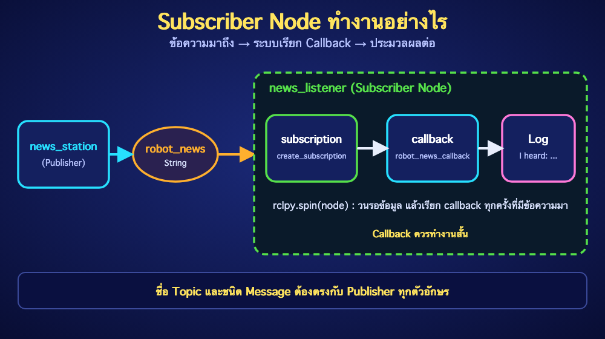

ย้อนกลับ

EP5.2
Subscriber Node
"รับข้อมูลจาก Topic ผ่าน Callback อย่างถูกต้อง"
1. my_robot_controller/my_subscriber.py

import rclpy
from rclpy.node import Node
from std_msgs.msg import String
class NewsListenerNode(Node):
def __init__(self):
super().__init__('news_listener')
self.subscription = self.create_subscription(
String,
'robot_news',
self.robot_news_callback,
10,
)
def robot_news_callback(self, msg):
self.get_logger().info(f'I heard: {msg.data}')
def main(args=None):
rclpy.init(args=args)
node = NewsListenerNode()
try:
rclpy.spin(node)
except KeyboardInterrupt:
pass
finally:
node.destroy_node()
if rclpy.ok():
rclpy.shutdown()
if __name__ == '__main__':
main()
ชื่อ Topic และชนิด Message ต้องตรงกับ Publisher ทุกตัวอักษร Callback ควรทำงานสั้น หากประมวลผลหนักควรแยก Worker หรือใช้ Executor ที่เหมาะสม
2. setup.py
entry_points={
'console_scripts': [
'news_station = my_robot_controller.my_publisher:main',
'news_listener = my_robot_controller.my_subscriber:main',
],
},
3. ตรวจ Syntax และ Build
cd ~/ros2_ws/src/my_robot_controller
python3 -m py_compile my_robot_controller/my_subscriber.py
cd ~/ros2_ws
colcon build --symlink-install --packages-select my_robot_controller
source install/setup.bash
4. ทดสอบสอง Terminal
# Terminal 1
source /opt/ros/jazzy/setup.bash
source ~/ros2_ws/install/setup.bash
ros2 run my_robot_controller news_station
# Terminal 2
source /opt/ros/jazzy/setup.bash
source ~/ros2_ws/install/setup.bash
ros2 run my_robot_controller news_listener
ตรวจกราฟและ Topic:
ros2 node list
ros2 topic info /robot_news -v
ros2 topic hz /robot_news
✅ ผ่านเมื่อ Subscriber แสดงข้อความเดียวกับ Publisher ต่อเนื่องประมาณ 1 Hz